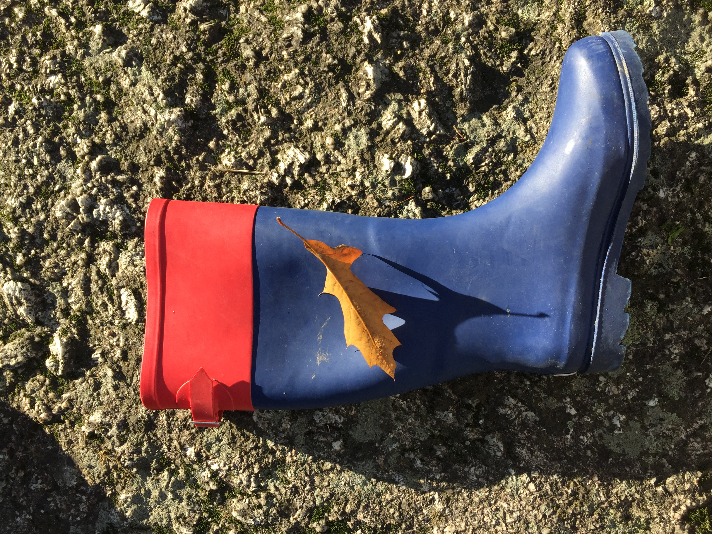
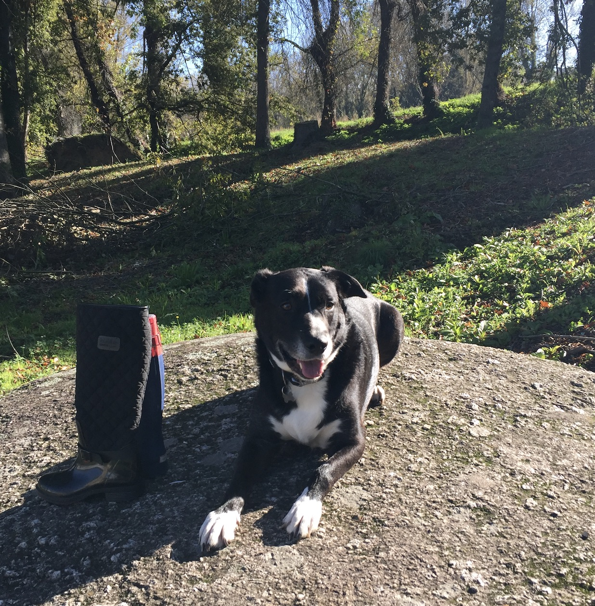
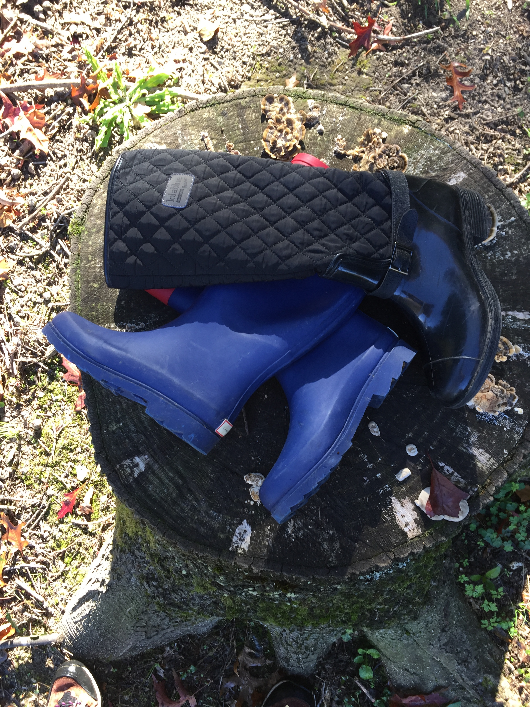

GA  OCHAS

As
Galochas são uma espécie de calçado feito
de borracha ou de outro material impermeável.

de borracha ou de outro material impermeável.
Nos séculos passados, eram exclusivamente
usadas para actividades profissionais e/ou
lúdicas específicas, tais como a agricultura,
a pecuária ou a caça, entre outras.
Com origem na palavra francesa galoche,
calçavam-se por cima de outro calçado,
geralmente para o proteger da água ou lama.

usadas para actividades profissionais e/ou
lúdicas específicas, tais como a agricultura,
a pecuária ou a caça, entre outras.
Com origem na palavra francesa galoche,
calçavam-se por cima de outro calçado,
geralmente para o proteger da água ou lama.
Actualmente, além do uso profissional,
as Galochas são também consideradas um
acessório de moda imprescindível nas
estações chuvosas. Efectivamente,
hoje em dia, são consideradas
a mais nova tendência da moda Inverno,
existindo tantos modelos, que o difícil
é escolher só um par.
as Galochas são também consideradas um
acessório de moda imprescindível nas
estações chuvosas. Efectivamente,
hoje em dia, são consideradas
a mais nova tendência da moda Inverno,
existindo tantos modelos, que o difícil
é escolher só um par.